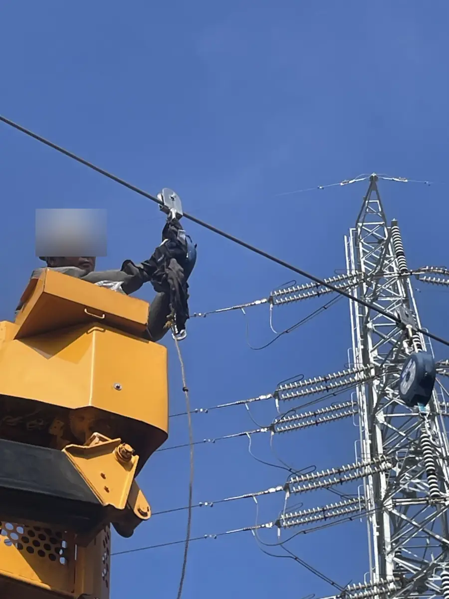

毎月の点検
各拠点を訪問し、安全ブロック設備の状態を確認。実施した確認内容は点検記録と照合し、掲載できるものから公開します。
工場のトラック荷台作業を支える墜落防止設備。太刀川組は支持鉄骨の設計・構造計算から施工、初回試験、そして現在の保守点検まで、一貫して携わっています。
安全ブロックが止まっても、
それを支える構造が持たなければ意味がない。
トラックに積んだ荷物を梱包する際、荷台上での作業に伴う墜落リスクに備えるため、安全ブロック設備を設けた工場の事例です。
現場での取付作業そのものは比較的短期間でした。一方、設備を支える鉄骨は事前に自社で設計・構造計算を実施。設置後には実物を用いた試験も行い、その後も継続した保守点検を担当しています。
墜落を防ぐための安全ブロックと、それを支える構造は一体で考える必要があります。設置することだけを目的にせず、自社で支持鉄骨の設計・構造計算を行い、現場に取り付けました。
東京支店の設備では、当初検討した追加梁2本のみの構成では、自社の構造計算で必要な条件を満たせませんでした。そこで既存梁を活用し、左右へ伸びるワイヤーで支持構造を引っ張る方法を検討。ワイヤーを含めた構成で計算を行い、当該計算上の条件をクリアしました。
最初の設計が通らなかったからこそ、既存構造との関係を見直した。完成後の写真に写る斜めのワイヤーには、そんな設計の経緯があります。
このワイヤー施工の発想には、太刀川組が以前から携わってきた高速道路下の剥落・落下防止ネット設置工事での経験が生きています。高速道路工事で培ったワイヤーを張る施工技術を、工場の安全ブロック支持構造へ応用しました。施工にはワイヤー緊張器という専用工具を使用しています。代表者によると、使用工具の最大牽引能力はおおむね1トンで、実際にワイヤーへ導入された張力を測定した数値ではありません。見た目には細く目立たないワイヤーですが、既存梁を活用する支持構造を成立させるうえで重要な役割を担っています。ワイヤーの端部には微調整用のバックルを設けています。代表者によれば、張り方を強くしすぎると安全ブロックがトラックの停車位置の真上からずれてしまい、反対に緩すぎると支持強度上の懸念が生じるため、配置と支持条件の両方を考慮して調整したとのことです。異なる現場の経験が、今回の設計上の課題に対する解決策につながった事例です。
※約1トンは代表者の説明に基づく工具の最大牽引能力の概数です。施工後の実張力、設備の許容荷重、落下時荷重や製品の性能を示す数値ではありません。ワイヤーの張り具合に関する記述は当該現場の施工経緯であり、他の現場で緩みを設けることを推奨するものではありません。調整条件・工具の型式・仕様書・構造計算書との照合は未実施です。
※代表者への聞き取りに基づく設計経緯です。構造計算書の数値・接合部の仕様・安全性能の独立検証を示すものではありません。写真は公開条件の確認後に追加します。
設備の使用条件と支持構造を検討。計算書の具体的な諸元は公開していません。
工場のトラック作業位置に合わせて支持構造と設備を設置しました。
当時の現場で実物落下試験を行い、作動状況と支持構造の状態を確認しました。
初回設置時には、砂100kgを入れたトンパックを用いて、現場で実物落下試験を実施しました。安全ブロックが作動するか、支持構造に問題が見られないかを確認するための試験です。
当時の試験では、安全ブロックの作動と支持構造について、現場で意図した結果を確認できました。
※当時の試験実施経験を記録したもので、メーカーによる認証試験や公的な適合証明を示すものではありません。落下条件・安全係数・許容荷重の一般化、試験方法の模倣を推奨するものではありません。
使用時は、作業員1人につき1台の安全ブロックを用います。撮影した設備では2台を配置し、1人作業ではもう1台を予備として、運転手と補助員の2人作業時にはそれぞれ1台ずつ使用する運用です。
掲載中の写真は設置工事当時の記録です。新たに撮影した設備全景や点検時の写真は、取引先施設と第三者の識別情報を確認・必要に応じて加工した後に追加する予定です。

太刀川組は東京・千葉の2拠点で、安全ブロック設備の継続的な点検を担当しています。設置した設備を、実際に使われている現場で見守り続けています。
各拠点を訪問し、安全ブロック設備の状態を確認。実施した確認内容は点検記録と照合し、掲載できるものから公開します。
ワイヤー径の測定と摩耗状態の確認、溶接接合部の確認などを実施。ワイヤー交換の要否は摩耗状況などをもとに判断しています。
安全ブロックは年1回の入れ替えを行う運用です。メーカー推奨の約2年ごとのメーカー点検とは区別して管理しています。
点検表や実際の交換履歴を確認のうえ、設備の管理経過を継続して更新する施工実績ページとして育てていきます。
※点検項目・周期は当該現場での実施内容です。すべての安全ブロックに共通する法定点検周期やメーカー基準を示すものではありません。設備の安全性や使用可否は、製品仕様・実際の状態・適用基準に沿って個別に判断する必要があります。
現場の作業時間だけを見れば、この設備の取付は大掛かりな仕事ではありませんでした。
けれど、人の墜落に備える設備だからこそ、取り付ける前に考えるべきことがありました。自社で設計と構造計算を行い、実物試験で作動を確認し、その後も毎月現場へ足を運んでいます。
安全設備は、取り付けた瞬間に役割が終わるものではありません。現場で使われ、時間が経ち、摩耗が進む可能性もある。だから点検を続け、必要な入れ替えや交換を考えます。
施工した日だけではなく、
使われ続ける毎日に向き合う。
代表者への聞き取りに基づいて編集した文章です。発言の逐語引用ではありません。
設備の用途、作業場所、既存構造物、必要な施工範囲などを伺い、対応できる範囲を個別に検討します。設計条件や安全性能は案件ごとに確認します。
工場設備の工事を相談する →